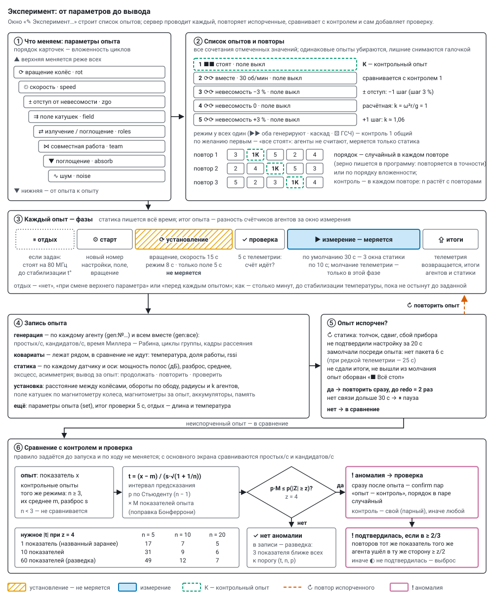

Эксперимент и программа
Эксперимент — список опытов, пройденный заданное число повторов; опыт — один набор параметров. Эксперимент собирается в окне «✎ Эксперимент…» основного экрана и по «▶ Запустить» уходит серверу программой (POST /api/program/start). Сервер (server/program.py) проводит опыты по очереди, повторяет испорченные, сравнивает опыты с контрольными, при аномалии сам добавляет проверку. Как статика решает «продолжать / повторить / проверить» — static_watch.md; что значит каждый режим — modes.md.


Параметры опыта#
У каждого параметра в окне отмечаются значения. Порядок карточек — вложенность циклов: верхняя меняется реже всех, нижняя — от опыта к опыту (тащить за ⠿ или ▲ ▼). Вращение переключать дороже всего (колёсам нужен разгон) — его разумно держать наверху. Одно значение — параметр постоянный.
| параметр | ключ set | значения |
|---|---|---|
| ⟳ вращение колёс | rot | два знака — колесо 1 и 2: 0 стоит, r вперёд ⟳, l назад ⟲ (rl — навстречу, rr — вместе, r0 — только колесо 1); сетка 3 × 3 |
| ⏲ скорость | speed | rpm:30 — обороты, pwm:30 — ШИМ %, zerog — невесомость наверху колеса; по умолчанию в списке 15, 30, 45, 60 об/мин и невесомость, свои добавляются |
| ± отступ от невесомости | zgo | 0, ±1, ±2 шага по zgStep % оборотов (шаг задаётся, по умолчанию 3 %); в set — проценты (-3, 0, 3 …), в шаге — mot.zg; только при zerog, иначе null |
| ⇉ поле катушек | field | два знака — катушка 1 и 2: 0 выкл, p +, m − (p0 — только катушка 1, +); сетка 3 × 3 |
| ⇄ излучение / поглощение | roles | два знака — колесо 1 и 2: g генерирует, a поглощает, 0 стоит: gg, g0, 0g, ga, ag, 00 (только статика); aa, a0, 0a нельзя — поглощать нечего |
| ⋈ совместная работа | team | solo, cascade, one, relay; никто не генерирует — null |
| ▼ поглощение | absorb | кто/как: кто — all, pair, one, split, half; как — mix, pieces, chain, sham, silent (pieces и chain — всегда all); никто не поглощает — null |
| ∿ шум | noise | смесь источников m:rng+csi+adc …; перебор — все вместе, без одного, по одному |
Значения словами — modes.md. Невесомость — обороты, при которых наверху колеса k = ω²r/g = 1 (r — радиус по датчику обода, нет замера — из настроек; при 450 мм — 44,6 об/мин). Вся система неточна, поэтому опыт ставит ступени около расчётной: +3 % оборотов — k ≈ 1,06 (k меняется вдвое сильнее оборотов).
Список опытов#
- Все сочетания отмеченных значений, одинаковых нет: у стоящих колёс скорость и отступ не перебираются; отступ — только при невесомости; никто не генерирует — способ и шум не важны; никто не поглощает — поглощение не важно; обратный шум — только когда другое колесо поглощает. Лишний опыт снимается галочкой; сформированный список правится (⧉ копия, ↑ ↓, ✕).
- Контроль — опыт без воздействия (колёса стоят, поле выкл), если в эксперименте меняются вращение или поле. У остальных опытов
control_for— контроль того же режима (роли, способ, поглощение, шум). - «Все стоят» — по желанию первым (по умолчанию да): агенты не считают, меряется только статика.
- Порядок — по вложенности или случайно в каждом повторе (
shuffle; зерноseedпишется в программу, с ним порядок повторяется в точности).
Настройки окна#
| настройка | по умолчанию | что |
|---|---|---|
| длительность | 30 с | измерение опыта. Статика даёт вывод по окнам 10 с, «⚠ проверить» — от 2 окон подряд: за 30 с — 3 окна, короче 20 с статике мало. Простых за опыт N ≈ темп × длительность, темп известен с точностью ±1/√N |
| установление | 15 / 8 / 5 с | после смены вращения, скорости или отступа · роли, способа, поглощения, шума · только поля; не меряется |
| между колёсами | — | расстояние от обода до обода, мм; ставится руками, см. ниже |
| повторов | 2 | сколько раз пройти список; порядок — по вложенности или случайно |
| отдых | нет | нет · при смене верхнего параметра · перед каждым опытом. Как: столько минут · до стабилизации температуры (по умолчанию) · пока не остынут до … °C; не дольше 6 мин |
| греться до | 73 °C | предел агентам; регулятор держит на 1 °C ниже (thermal.md) |
| аккумуляторы | 2 × 18650, 2500 мА·ч | ёмкость для сводки; «пауза между повторами» — заменить и «▶ Продолжить» |
| контроль и проверки | — | первым «все стоят»; эталон шума статики перед началом (0 мин — взять записанный); проверочных пар при аномалии (0); ❗ отклонение статики — повторить опыт (нет); звук тревоги; пропала связь дольше 30 с — пауза (да) |
| тонкости опыта | выкл, молчание — вкл | оба колеса одной группой; опыт на агенте (сам останавливается и сдаёт итоги); Wi-Fi выкл на опыте (только с опытом на агенте); молчание телеметрии во время измерения (по умолчанию вкл) |
Порог аномалии z = 4, повтор испорченного redo = 2, показатели аномалии metrics = простых/с и кандидатов/с — основной экран задаёт их сам.
Расстояние между колёсами — настройка установки, а не параметр: «↔ … см» между колёсами на схеме, поле «между колёсами» в окне, POST /api/rig {gap_cm}. Хранится в rig.json с историей и пишется в программу (rig), в каждый опыт (runs[].rig) и в результаты (слой опыта, столбец CSV).
Сводка до запуска: опыты (контрольных, снятых), повторы, время всего и по частям (измерение · установление · отдых · эталон), когда закончится; за проход — разгоны колёс, смены поля, отдыхи.
- Тепло самого горячего агента по замеру в трубке с радиаторами: «пол» на 80 МГц ≈ 57 °C, под счётом — пол + нагрев режима (эгоистичный и каскад +10 °C, остальные +8), нагрев с постоянной ≈ 85 с, остывание ≈ 30 с. Сводка показывает, до скольких градусов дойдёт и запас до предела; где регулятор урежет работу (темп там исказится) или отдых «до … °C» ниже пола не дождётся — предупреждает.
- Аккумуляторы по контурам: шина колеса (агент под счётом ≈ 1,3 Вт, стоит ≈ 0,5 Вт) и катушка (поле ≈ 4,5 Вт + агент 0,5 Вт); DC-DC и диод ≈ 80 %, пара 18650 отдаёт ≈ 85 % паспорта. Сколько проходов выдержит одна пара, сколько нужно замен — тогда включить паузу между повторами.
Коэффициенты — THERM и POWER в server/static/plan.html.
Как идёт опыт#
Каждый опыт — с новым номером настройки, поэтому счётчики агентов считают ровно его; итог — разность счётчиков за окно измерения, установление в темп не попадает. Темп делится на время по часам самого агента (разность его age в тех же пакетах, что и счётчики): снимок до молчания и первый пакет после него отстоят от начала и конца окна на секунду‑две, и на коротком опыте часы сервера дали бы ±10 %. Основа опытов — общие и свои параметры агентов на момент старта; после программы агенты возвращаются к ним, но стоят (run = 0), поле катушек выключается, колёса, если их крутила программа, останавливаются.
Фазы (now.phase; ph_t — начало фазы, ph_dur — длина, phases — когда началась каждая):
| фаза | что |
|---|---|
rest | отдых перед опытом, если задан: генераторы на 80 МГц, катушки выкл (thermal.md § 4.5) |
start | настройка агентам, поле катушек, вращение |
prep | установление (settle_s): колёса разгоняются, поле встаёт; не меряется |
test | 10 с с телеметрией: счёт идёт? (test: pr_s, idle — кто не считал, ok); у опыта на агенте и «все стоят» её нет |
run | измерение; молчание телеметрии — только здесь, статика меряет и шлёт всегда. Молчат и датчики шины (обод, магнитометр): регулятор держит последний ШИМ (в «невесомости» — и последний радиус обода), обороты и поле в записи опыта — за проверку и итоги (sense_win) |
upload | телеметрия возвращается, итоги агентов и статики собираются |
pause | пауза (ниже) |
Запись опыта (runs[]):
gen— генерация по каждому агенту (gen:№…) и всем вместе (gen:все): простых/с (pr_s), кандидатов/с (cand_s), время Миллера — Рабина на кандидата (mr_us), циклы группы (cycles_s), кадры рассеяния (stx_s); температура и доля работы — ковариаты: лежат рядом, аномалией не считаются (режимы заведомо греют по-разному);static— по каждому статическому датчику за окно измерения, по вертикали и горизонтали (оси по тяжести): мощность октав (p0_v,p0_h…, дБ), разброс (sd_v,sd_h), эксцесс, асимметрия; среднее —mean_v,mean_h1,mean_h2, мкg;watch— вывод статики за опыт;field— магнитометры за опыт (x, y, z, |B|);coil_sense— поле катушек по магнитометру колеса;rpm— средние обороты колёс по датчику обода,radiusиk— радиусы агентов и k при этих оборотах;rig— расстояние между колёсами;bat— аккумуляторы контуров в конце опыта;mem— свободная память агентов;set,mot,coil,layers— параметры опыта;test,rest— проверка и отдых.
Испорченный опыт в сравнение не идёт и сразу повторяется (до redo раз; оборванный стопом — всегда). Причина — в spoiled_why:
- статика: «↻ повторить» — толчок, сдвиг, сбой прибора;
- кто-то не подтвердил настройку за 20 с — опыт помечается сразу, без ожидания его длительности;
- замолчал посреди опыта — нет пакета дольше 6 с при обычной телеметрии, 25 с при редкой (сели аккумуляторы, пропало питание);
- опыт на агенте: не сдал итоги за срок + 60 с; молчание: не вышел на связь за 15 с после опыта (настройка «говорить» повторяется раз в 2 с);
- опыт оборван «■ Всё стоп».
Не вернулся на связь за 30 с — программа встаёт на паузу «нет связи с №…: проверьте питание» (pause_lost), после «▶ Продолжить» испорченный опыт повторяется. Участники программы — агенты, которые были на связи при её старте. Программа и сессия прежней панели одновременно не идут: обе управляют одними агентами.
Аномалия и проверка#
Аномалия — показатель опыта отличается от его контрольных опытов так, что разбросом контролей это не объяснить. Показатели — генерация по каждому агенту и всем вместе и статика по каждому датчику; с основного экрана проверяются простых/с и кандидатов/с (metrics), статику стережёт свой вывод (ниже, «Тревога статики»).
Критерий. Контрольных опытов мало, поэтому отклонение в их разбросах — распределение Стьюдента, а не нормальное: при трёх контролях |z| ≥ 4 случается в 7 % случаев, а не в 0,006 %. Показателей на опыт — от двух до десятков, и случайный выброс где-нибудь нашёлся бы почти всегда. Поэтому для каждого показателя:
- t = (x − m) / (s · √(1 + 1/n)) — x значение опыта, m и s среднее и разброс n контролей (интервал предсказания нового наблюдения);
- p — по Стьюденту с n − 1 степенями свободы, умножается на число показателей опыта M (поправка Бонферрони);
- аномалия — если p · M не больше вероятности |Z| ≥ z у нормального; z = 4 — ложная тревога реже 1 на 16 000 опытов.
Нужно n ≥ 3 контролей того же режима (control_for; без него — все контрольные): при одном контроле на повтор — не меньше трёх повторов. Нужное |t| — в таблице на рисунке: мало контролей — мало чувствительности, это честно. Поэтому главные показатели называют до запуска (metrics: точные имена или начала — pr_s, band): проверяются только они, поправка мягче; без metrics проверяется всё — это разведка. У каждого неконтрольного опыта пишется scan — три показателя с наименьшей вероятностью (t, n, p): видно, что близко к порогу. Правило задаётся до запуска и по ходу не меняется.
Проверка. Найдена аномалия — сразу после этого опыта добавляются confirm пар «тот же опыт — контроль» (контроль — его control_for, иначе случайный из контрольных), порядок в каждой паре случайный. Опыт проверяется один раз; аномалия внутри проверки новой проверки не вызывает.
Вывод. ❗ Подтвердилась — если хотя бы в двух третях проверочных повторов тот же показатель того же агента отклонился от тех же контролей в ту же сторону хотя бы на z/2. Иначе — ◐ не подтвердилась, случайный выброс.
▣ Колесо‑пустышка — проверка самого детектора. Две платы без датчиков лежат рядом с колёсами, со своим питанием от повербанка через модуль‑триггер USB‑C → 5 В (не от шины). В составе это «колесо 3» без мотора и катушки: на схеме основного экрана, в настройке, справа от «свободных» есть место «▣ колесо‑пустышка». В программе его агенты перечислены в dummy. В каждом опыте колесо‑пустышка работает своей группой и тем же режимом, что колёса: каскад, тот же шум, «каждый сам». В опытах с поглощением две платы работают парой между собой: одна генерирует, другая поглощает тем же способом (смешать или пустышка), в обратном шуме поглощает и возвращает кадры; это неподвижный эталон для поглощения. Его генерация (gen:№… по каждой плате и gen:колесо-пустышка суммой) проверяется тем же критерием и в той же семье сравнений, что колёса, но в gen:все не входит. Пустышкой плата считается только в опыте, где её группа состоит из одних плат колеса‑пустышки. Если её поставить в группу колеса, она становится участником, и её отклонение может быть настоящим. Так устроены два опыта первой программы (tools/first_program.py, блок 5):
- подслушивающие — оба колеса одной группой считают только из кадров плат колеса‑пустышки (обратный шум,
src 16), а те поглощают простые обоих колёс; контроль — поглотитель‑пустышка (sh 1). Выключается ключом--no-listen; - мост — первая плата встаёт звеном в каскад колеса 1, неподвижным среди вращающихся, вторая считает одна (она и остаётся пустышкой); колёса навстречу, контроль — то же стоя. Выключается ключом
--no-bridge.
Вращения и поля у колеса‑пустышки нет, поэтому любая его «аномалия» — ложная тревога детектора: дрейф, эфир, температура или ошибка самого анализа. Такие находки идут не в anomalies, а в placebo: anomalies, verdicts (их проверка теми же парами), tested (сколько опытов сравнено), hits, confirmed и shared (опыты, где аномалия колёс совпала с тревогой колеса‑пустышки — значит, не от вращения). В отчёте, в ленте и на основном экране — строка «▣ колесо‑пустышка: ложных тревог нет» или их число. Если ложная тревога подтвердилась, детектор ошибается, и аномалиям колёс той программы верить нельзя, пока причина не найдена.
Опорная поправка — колесо‑пустышка как опора. Пустышка работает тем же режимом в то же время, что колёса, поэтому в каждом опыте считается ещё канал gen:все/опора: простых (и кандидатов) в секунду на агента у колёс, делённые на то же у колеса‑пустышки. Общее у колёс и опоры — загрузка эфира, температура комнаты, время суток — в отношении сокращается, а контрольный опыт идёт в другое время, поэтому gen:все против контроля такой дрейф видит, а gen:все/опора нет. Канал проверяется тем же критерием в той же семье сравнений (metrics: ["pr_s"] его включает: имя показателя то же), на одно‑два сравнения строже поправка. Отклонилось gen:все/опора вместе с тревогой самой пустышки — причина в опоре, не в колёсах (shared). Опора из двух плат шумит сама: при ~40 простых/с на плату за 3 мин — около 0,9 % на отношение. Нулевая программа покажет, ровнее ли отношение, чем gen:все. В отчёте — показатель «колёса к опоре» в «что влияет». Платы пустышки без радиаторов, частота та же, что у колёс (сравнивать — на одной частоте), а потолок температуры свой — dummy_tmax, по умолчанию 75 °C (у колёс 73): программа ставит его им своим в каждом опыте, чтобы регулятор их не притормаживал.
❗ Тревога статики. Вывод статики за опыт «⚠ проверить» — отклонение от эталона держится не меньше 2 окон подряд или видно за весь опыт и не объясняется известными источниками. Программа пишет тревогу (alerts, у опыта alert; в ленте и отчёте «❗») и при again > 0 сразу ставит тот же опыт ещё раз (why: "отклонение статики"), до again раз подряд. Основной экран звенит (три коротких сигнала; браузер даёт звук после первого нажатия на страницу), в шапке мигает «❗ отклонение статики», окно показывает причину по датчикам, «↻ повторить опыт N ещё раз» (POST /api/program/again {n}) и «повторять сам: нет / 1 / 2 / 3» ({auto}). Вне программы звенит на живом выводе (не чаще раза в минуту) и предлагает повторить последний опыт с теми же настройками. Толчок держащееся отклонение не прячет: держится у датчика 2 окна подряд (held) — тревога звенит, даже если опыт испорчен. Сбой прибора и сдвиг датчика тревоги не дают: отклонение тогда от прибора или от нового положения — нужен новый эталон.
Пауза, стоп, продолжение#
- Пауза — перед следующим опытом: катушки выкл, колёса стоят, агенты на отдыхе (80 МГц); ждёт «▶ Продолжить» (
POST /api/program/resume) сколько угодно. Встаёт по кнопке «⏸ Пауза» (POST /api/program/pause; пока опыт идёт, просьбу можно снять) и сама: перед повтором (pause_repeat), сели аккумуляторы (INA219 ниже 6,5 В), нет связи дольше 30 с (pause_lost). Причина — в плашке «сейчас» и вpauses(когда, сколько, почему). - Стоп после опыта (
POST /api/program/stop) — опыт доработает, дальше программа встанет; просьбу можно снять ({cancel: true}). Всё стоп ({now: true}) — сразу: опыт обрывается, помечается «прерван» и при продолжении идёт первым. - Продолжить остановленную, прерванную или упавшую программу (
POST /api/program/continue {id}) — с первого невыполненного опыта: тот же план и зерно, эталон заново не пишется, итоги — в ту же запись (continued). Программа, шедшая при перезапуске сервера, помечается «прервана» — её тоже можно продолжить. На основном экране — «↻ Продолжить №… · ещё N опытов».
Результаты#
«☰ результаты» (/report):
- Что влияет при прочих равных. Для параметра P и значения v каждый опыт с P = v сравнивается с опытами, где P — опора (первое значение: колёса стоят, поле выкл, первый отмеченный вариант), а остальные параметры те же. Темпы — отношением к среднему опор, температура, |B| и доля опытов с отклонением статики — разностью. Δ — среднее по парам, ± — его ошибка; вывод по Стьюденту с числом пар: ❗ отличие (p ≤ 0,0027, как 3 σ), ◐ возможно (p ≤ 0,05), ✓ не отличается; меньше трёх пар — «нужны повторы». Сравнений много — одно-два «◐» бывают случайно, их проверяют повтором.
- Сводная — среднее показателя по двум параметрам (строки × столбцы) или отличие от первого столбца.
- Протокол опытов — по каждому: параметры (имя, время, длительность, расстояние между колёсами), итог (✗ испорчен — почему · ❗ аномалия подтвердилась · ◐ не подтвердилась или проверяется · ⚠ отклонение статики · ✓ контроль · ✓ как контроль), статика по каждому датчику (шум за опыт, мg; отличие от своих контролей, %; max z; вывод), аномалия (показатель, t) или самый большой |t| разведки; простые, темп, температура, |B|; по агентам — отдельной таблицей.
- CSV — всё это, параметры опыта отдельными столбцами словами.
Программа вручную (JSON)#
Эксперимент с основного экрана — частный случай; программу можно отдать и руками:
{
"name": "рассеяние против пустышки и тишины",
"baseline_min": 5, "repeat": 4, "shuffle": true, "settle_s": 10, "rest": "stable", "z": 4, "confirm": 3, "redo": 2,
"targets": "all",
"steps": [
{"name": "рассеяние: каждый сам", "minutes": 3, "cfg": {"sm": 1, "sh": 0}, "control_for": "пустышка"},
{"name": "пустышка", "minutes": 3, "cfg": {"sm": 1, "sh": 1}, "control": true},
{"name": "тишина", "minutes": 3, "cfg": {"sm": 0}, "control": true}
]
}| поле программы | по умолчанию | что |
|---|---|---|
baseline_min | 0 | сначала записать эталон шума статики, мин (основные группы стоят); 0 — взять записанный |
repeat, shuffle, seed | 1, да, случайное | повторов; случайный порядок в каждом повторе; зерно порядка |
settle_s | 10 | установление по умолчанию, с |
rest | 0 | отдых перед опытом: "stable" — пока за rest_window_s (90 с) температура упала не больше чем на rest_tol (0,5 °C), от rest_min_s (60 с) до rest_max_s (360 с); "below" — пока все не остынут до rest_below (20–80 °C); число — секунд; 0 — без отдыха |
z, metrics | 4, все | порог аномалии; показатели, названные до запуска (имена или начала) |
confirm | 3 | проверочных пар при аномалии; нужен хотя бы один контрольный шаг |
redo, again | 2, 0 | повторов испорченного; повторов при тревоге статики |
pause_repeat, pause_lost | нет, да | пауза перед каждым повтором; пауза, если пропала связь |
targets, axes | "all", — | кто участвует ("all" или список MAC); словарь параметров эксперимента для отчёта |
dummy | — | агенты колеса‑пустышки (MAC, из targets): их находки — ложные тревоги (placebo), в gen:все не входят; колёса к ним — gen:все/опора |
dummy_tmax | 75 | потолок температуры плат колеса‑пустышки в каждом опыте, °C (40–75; 0 — как у всех) |
static_spoil | true | вывод статики «повторить» портит опыт; false — статика меряется и пишется, а опыт идёт в сравнение (поиск отклонений генерации, когда рядом ходят) |
| поле шага | что |
|---|---|
name, minutes | имя (по нему опыт находит свой контроль) и длина измерения |
cfg, own, groups | общие параметры (ключи — как в таблице параметров), свои у агентов (нет — как на панели); или несколько групп, у каждой свои targets, cfg, own (не занятые на шаге стоят) |
control, control_for | контрольный шаг; имя контроля, с которым сравнивать этот (без него — со всеми) |
settle_s, rest | своё установление; false — без отдыха перед шагом |
quiet | молчание телеметрии генераторов на измерении; не указано — молчат (false — шлют всё время) |
agent | шаг на агенте: длительность уходит агентам (dur = шаг + установление), каждый сам останавливается и сдаёт итоги; только здесь в cfg можно ro: 1 — Wi-Fi выкл на шаге |
mot | вращение {pair: free/same/opposite/only1/only2, mode: off/pwm/rpm/zerog, dir, rpm, pwm, zg}; колёса разгоняются за установление |
coil | поле катушек: {"1": "+", "2": "выкл"} |
set, layers | параметры опыта ключами (по ним «что влияет»); слои словами для ленты |
Где лежит#
data/programs/<номер>.json — программа, план (с добавленными проверками и повторами), каждый опыт с итогами, аномалии (anomalies), выводы проверок (verdicts), ложные тревоги колеса‑пустышки (placebo), тревоги, паузы. API: GET /api/programs, GET /api/program?id=, POST /api/program/start {"program": …}, /stop, /pause, /resume, /continue, /again; POST /api/rig.